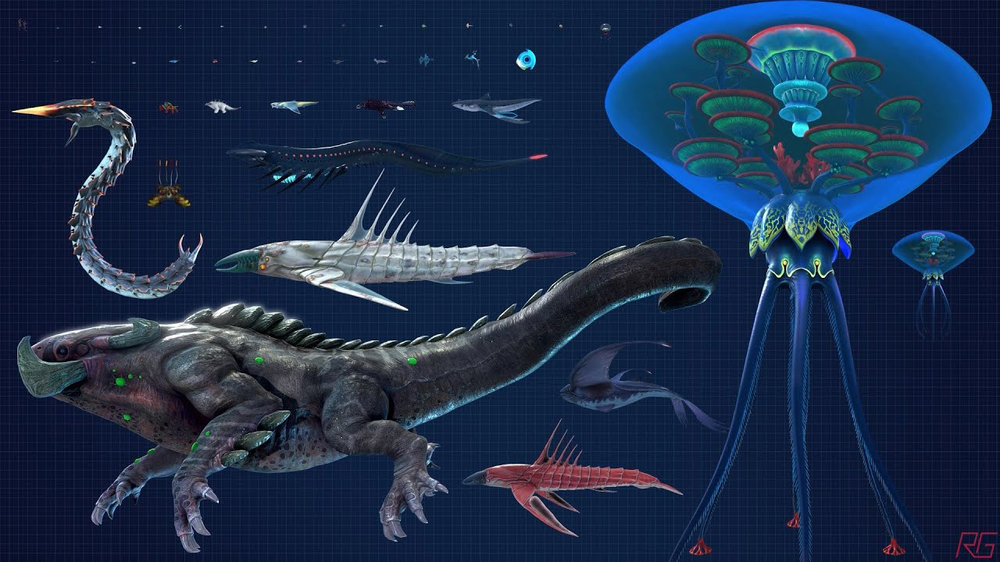

Subnautica Below Zero is the standalone sequel that takes players to the frozen regions of 4546B, offering a new adventure with a fresh storyline. Set after the events of the first game, players take on the role of Robin Ayou, a scientist investigating the disappearance of her sister. The game features icy biomes like frozen tundras, arctic seas, and towering glaciers, while introducing new tools, vehicles, and creatures adapted to the cold environment. With an expanded focus on narrative, players uncover more about the mysterious alien technology and its connection to the planet's secrets.
Leviathans in Subnautica are large, powerful creatures found in the deep ocean. Some are aggressive, while others are neutral, and they play a significant role in the planet's ecosystem.
